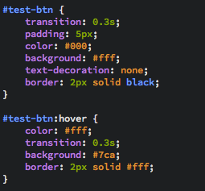

The above button was built using CSS pseudo classes. If you're interested the code is below.
HTML: <a id="test-btn" href="#">Test Button</a>
CSS:
The :hover pseduo class styles the <a&g; tag whenever the mouse hovers over that element. It then changes the (font) color, background and border of the element with a transition of 0.3 seconds.
Other notable anchor pseudo classes:
/* unvisited link */
a:link {
color: #FF0000;
}
/* visited link */
a:visited {
color: #00FF00;
}
/* mouse over link */
a:hover {
color: #FF00FF;
}
/* selected link */
a:active {
color: #0000FF;
}